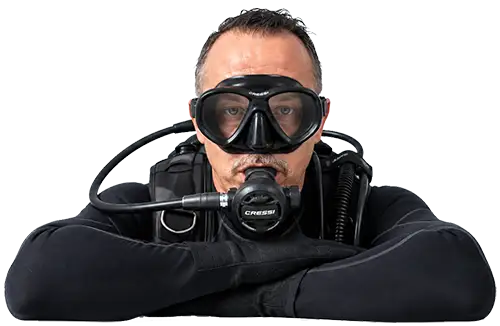
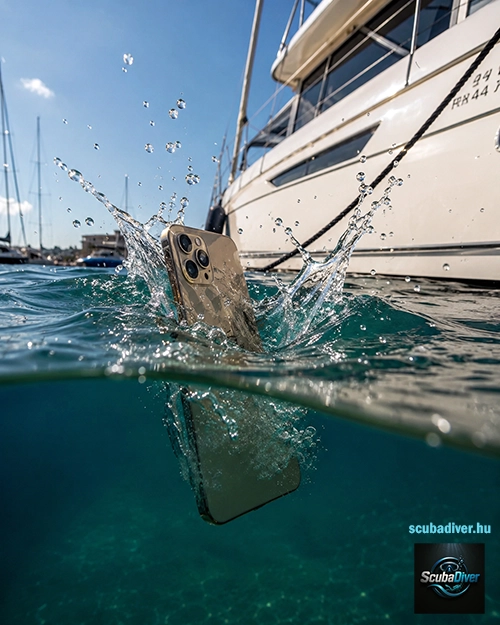

Professionális keresőbúvár szolgáltatás — a Balatontól a Tisza-tóig
Többéves tapasztalattal rendelkezem a tengerben végzett keresőbúvár feladatokban. Ha baj van, sűtgős segítségre van szüksége 0-24 órában állunk rendelkezésére, hogy biztosítsam a gyors és szakszerű kerreső és mentőbúvár beavatkozást.
Rendelkezem a szükséges technikai felszereléssel és speciális képzettséggel a különböző berlvízi és tengeri körülmények közötti kutatáshoz. Legyen szó akár sekély, nádas partközeli vizekről, akár mélyebb, nyílt vízi területekről. Vízbe esett telefon, lakás- és kocsikulcsok, ékszerek, drónok, járművek, hajók és roncsok felkutatásában is segítek.
Megbízás
Hajóról, mólóról, kikötőben vízbe esett, elsüllyedt tárgyak keresésére specializálódtam. Legyen szó telefonról, ékszerről, kulcsról, drónról vagy bármilyen értéktárgyról — szakszerűen és gyorsan felkutatom a víz mélyén.
A tapasztalt keresőbúvár szem tudja, hol érdemes keresni: a kikötők oszlopai körül, a hajókról beeső tárgyak általában szűk körben süllyednek le. A balatoni és velencei-tavi mólók végeinél, stégek alatt, hajóutak mentén — ezek a leggyakoribb helyszínek.
Professzionális felszereléssel és több éves keresőbúvár tapasztalattal vállalom a felkutatást a Balatonon, Velencei-tavon és Tisza-tavon.
Keresés megrendeléseMagyarország legnagyobb tava — változatos mélységű és látótávolságú vizek
Magyarország harmadik legnagyobb tava — sekély, nádasokkal tarkított vízfelület
Egyedülálló ökológiai környezet — változatos víz alatti terepviszonyokkal
Vízbe esett vagy eltűnt személyek szakszerű felkutatása rendezett és kaotikus körülmények között egyaránt.
Vízbe esett járművek, hajók, repülőgép roncsok, értéktárgyak és bizonyítékok lokalizálása és felszínre hozatala.
Rendőrségi és hatósági megbízásra víz alatti helyszínelés, dokumentálás és bizonyítékgyűjtés.
Speciális keresési minták alkalmazása (U-keresés, rácsminta, spirális) a maximális lefedettség érdekében.
Roncsvizsgálat, állapotfelmérés és biztonsági felmérés búvárok és hatóságok számára.
24 órás készenlét vészhelyzet esetén. Gyors reagálás a riasztást követően.
Vészhelyzet esetén hívj bátran! Vedd fel velem a kapcsolatot az alábbi elérhetőségek egyikén.